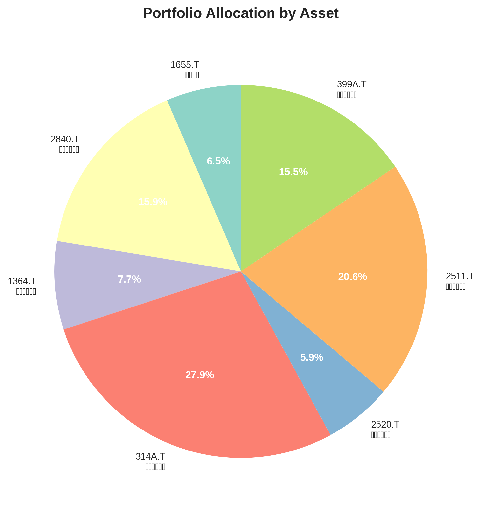
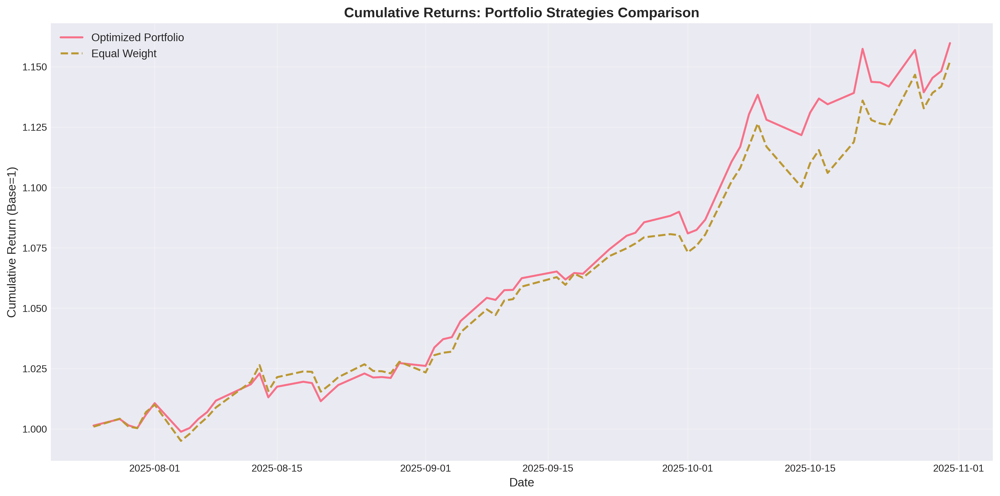
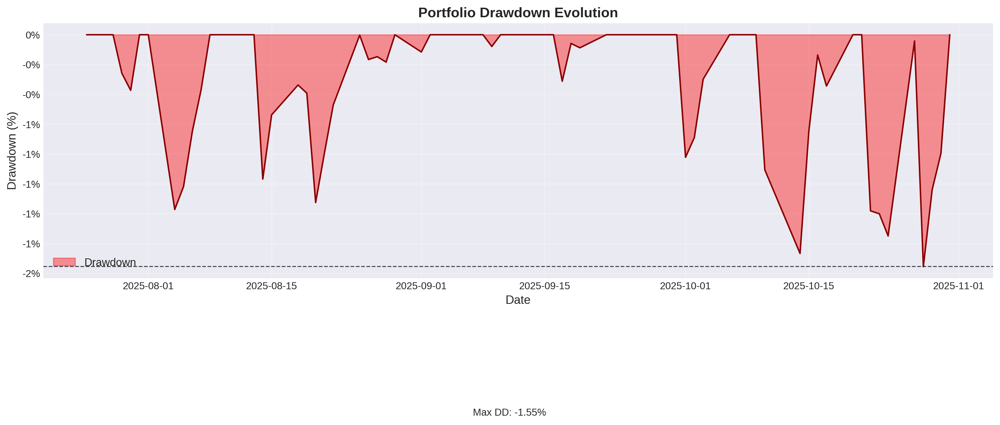
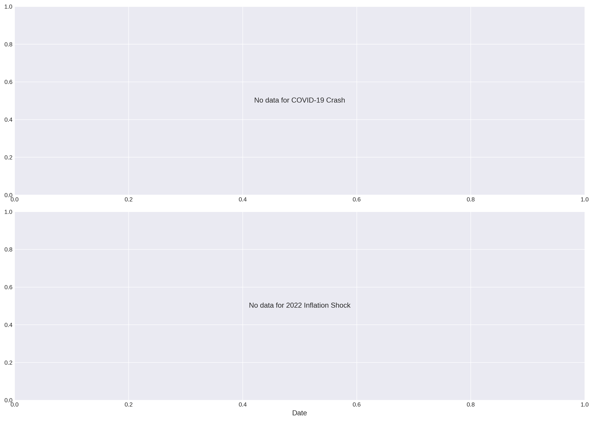
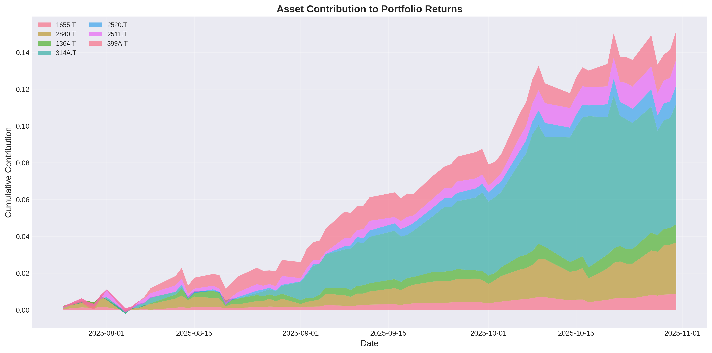
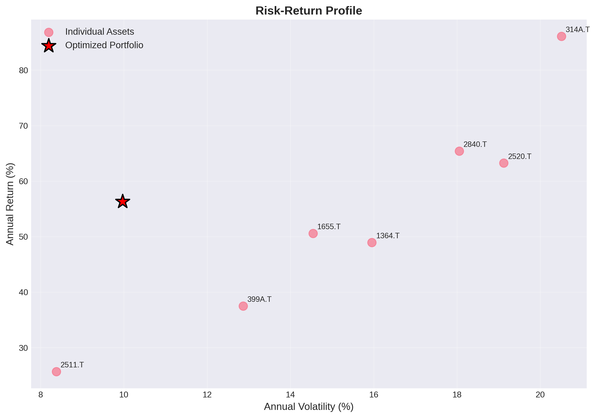
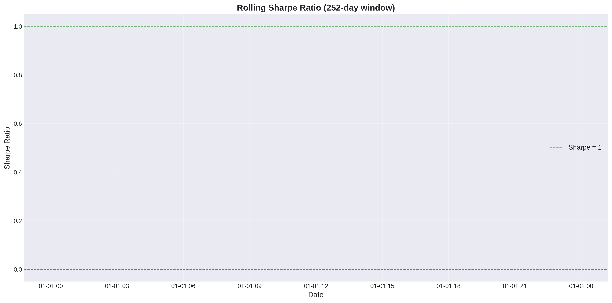
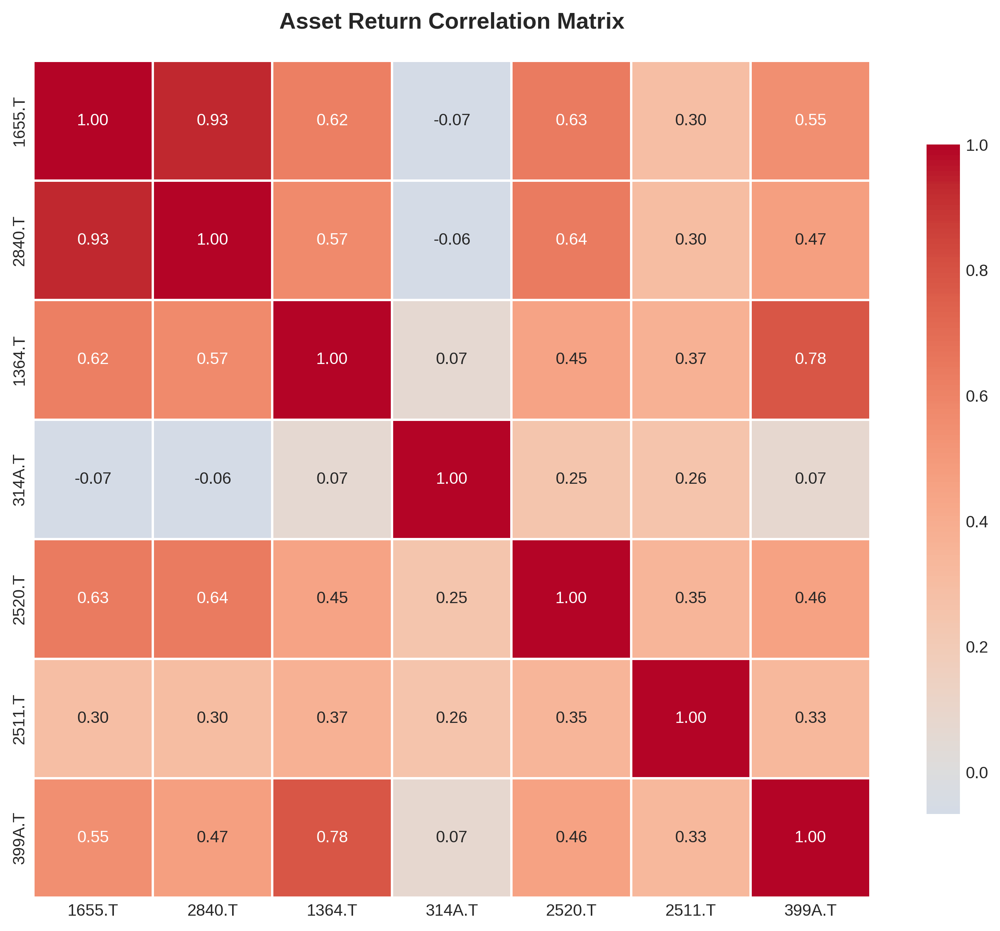

Index 7-Portfolio Optimization Report
Generated: 2025-11-01 09:51:53
代替ETF対応表
| 国内ETF | 代替指数 | オリジナル |
|---|---|---|
| 1655.T ｉＳ米国株 | S&P500指数 | ^GSPC |
| 2840.T ｉＦＥナ百無 | NASDAQ100 | ^NDX |
| 1364.T ｉシェア４百 | JPX日経400 | ^N225 |
| 314A.T ｉＳゴールド | LBMA Gold Price | GC=F |
| 2520.T 野村新興国株 | MSCIエマージング・マーケットIMI指数 | EEM |
| 2511.T 野村外国債券 | FTSE世界国債インデックス(除く日本) | TLT |
| 399A.T 上場高配５０ | 東証配当フォーカス100指数 | 1478.T |
初期投資額: ¥20,998,698（Max DD -20.63%バッファ込み、為替リスク排除、円建て運用）
Portfolio Allocation
| Ticker | Name | Category | Weight |
|---|---|---|---|
| 1655.T | ｉＳ米国株 | equity | 6.48% |
| 2840.T | ｉＦＥナ百無 | equity | 15.89% |
| 1364.T | ｉシェア４百 | equity | 7.67% |
| 314A.T | ｉＳゴールド | commodity | 27.95% |
| 2520.T | 野村新興国株 | equity | 5.87% |
| 2511.T | 野村外国債券 | bonds | 20.64% |
| 399A.T | 上場高配５０ | equity | 15.51% |
Risk Metrics
- Portfolio Value: ¥20,994,611
- Loan Amount: ¥10,000,000
- Current LTV: 47.63%
- LTV Limit: 60%
- Warning Ratio: 70%
- Liquidation Ratio: 85%
✅ HEALTHY: LTV within safe limits
Visualizations
Portfolio Allocation

Cumulative Returns Comparison
Performance of optimized portfolio vs benchmarks over the full period.

Drawdown Evolution
Historical drawdown profile showing maximum decline periods.

LTV Stress Tests
Loan-to-Value ratio during historical crisis periods (COVID-19, 2022 Inflation).

Asset Contribution to Returns
Cumulative contribution of each asset to overall portfolio performance.

Risk-Return Profile
Scatter plot showing individual asset positions vs optimized portfolio on risk-return spectrum.

Rolling Sharpe Ratio
252-day rolling Sharpe ratio showing risk-adjusted performance stability over time.

Asset Correlation Matrix
Correlation heatmap revealing diversification benefits between assets.
